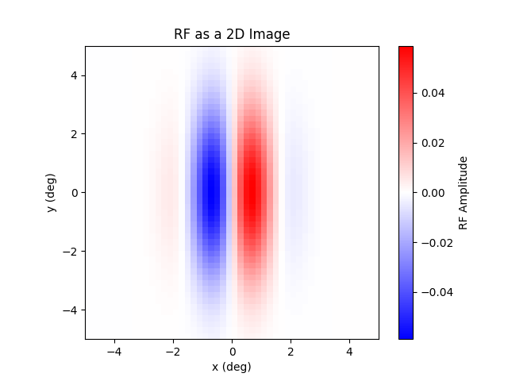
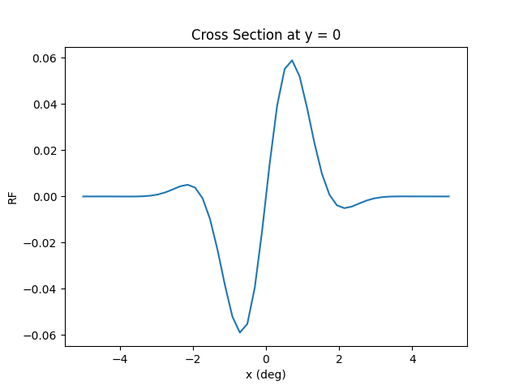
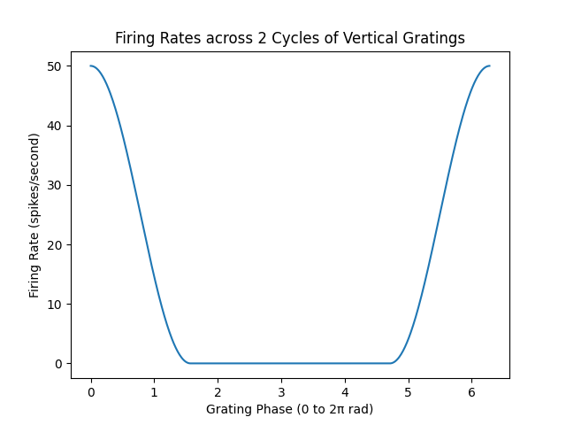
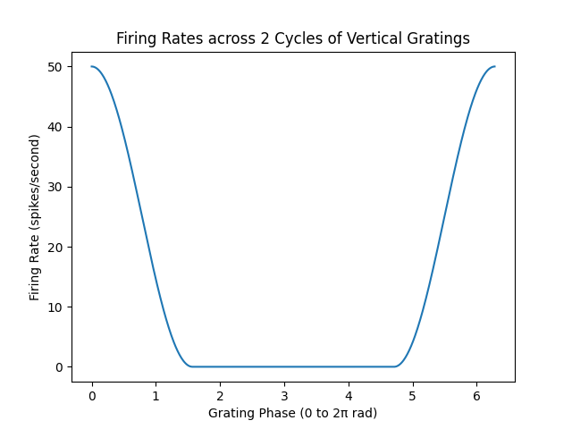

Projects:
STA of a simple cell with vertical RF given by a 2D Gabor function
This code is from an assignment for a computational neuroscience course at the University of Rochester. The purpose is to use a 2D Gabor function to implement a simple cell with a vertical RF, and an output nonlinearity of f(x) = x2 if x > 0, otherwise f(x) = 0. The RF extended ±5 degrees in the x and y-directions. The image was discretized such that 1 pixel corresponds to a 0.2 x 0.2 degree span (50 x 50 image).


 
